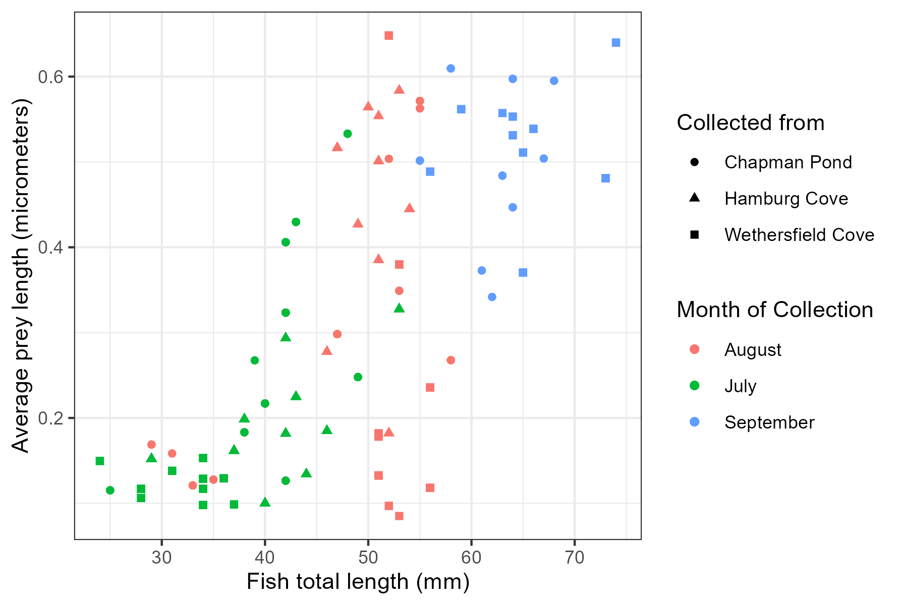

Chapter 4 Data Visualizations
4.1 Scatterplots, fish and prey
4.1.1 Use ggplot to create a scatterplot of average prey length by fish length
library(patchwork)
ggplot(avgfishpreylength, aes(x = TL_mm, y = fishavgpreylength,
color = month, shape = cove)) +
geom_point() +
theme_bw() +
labs(x = "Fish total length (mm)", y = "Average prey length (micrometers)",
color = "Month of Collection", shape = "Collected from") +
scale_shape_discrete(labels = c("Chapman Pond",
"Hamburg Cove",
"Wethersfield Cove"))
4.1.2 Use ggplot to create a scatterplot of average prey length by fish age
ggplot(avgfishpreylength, aes(x = age_days, y = fishavgpreylength,
color = month, shape = cove)) +
geom_point() +
theme_bw() +
labs(x = "Fish age (days)", y = "Average prey length (micrometers)",
color = "Month of Collection", shape = "Collected from") +
scale_shape_discrete(labels = c("Chapman Pond",
"Hamburg Cove",
"Wethersfield Cove"))
4.2 Selectivity plot
4.2.1 Use ggplot to create a graph of selectivity of different prey categories across months and sites
pd <- position_dodge(.15)
capsites_o <- c('wethersfield' = "Wethersfield", 'chapman' = "Chapman",
'hamburg' = "Hamburg", 'Ostracoda' = "Ostracoda")
capsites_z <- c('wethersfield' = "Wethersfield", 'chapman' = "Chapman",
'hamburg' = "Hamburg", 'Cladocera' = "Cladocera",
'Copepoda' = "Copepoda", 'Ploima' = "Ploima")
p1 <- ggplot(zpwcgcwide, aes(x = month, y = selectivity)) +
geom_line( aes(group = category), size = 1, position = pd) +
geom_point(position = pd, size = 4) +
geom_hline(aes(yintercept = 0), color = "red", linetype = "dashed") +
coord_cartesian(ylim = c(-1,1)) +
labs(y = "Selectivity", x = NULL) +
facet_grid("category~cove", labeller = as_labeller(capsites_z))
p2 <- ggplot(ostra, aes(x = month, y = actperc)) +
geom_line( aes(group = category), size = 1, position = pd) +
geom_point(position = pd, size = 4) +
coord_cartesian(ylim = c(0,100)) +
labs(y = "% of total prey", x = NULL) +
facet_grid("category~cove", labeller = as_labeller(capsites_o))+
theme(strip.text.x = element_blank(), strip.background.x = element_blank())
p1 / p2 + plot_layout(heights = c(3,1))